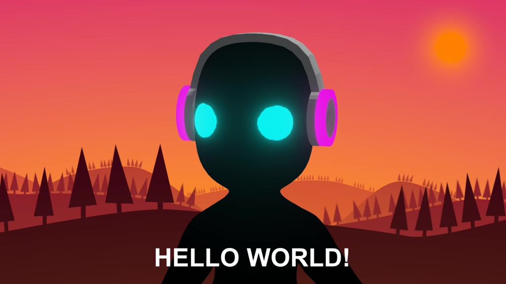
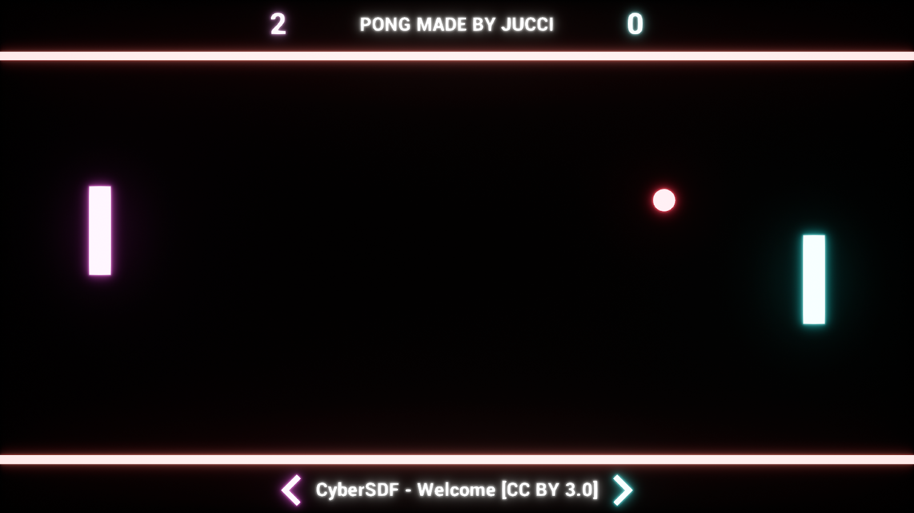
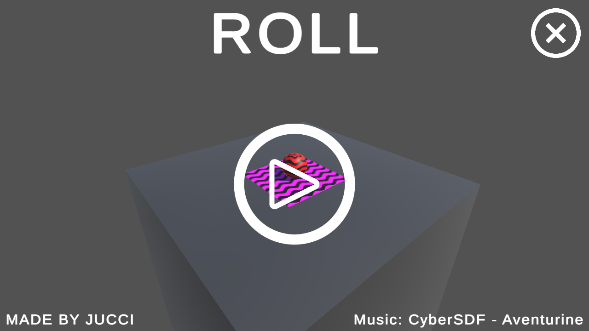
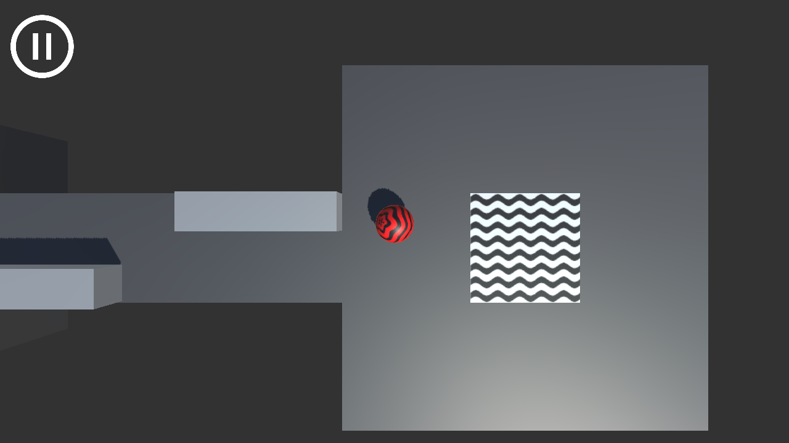
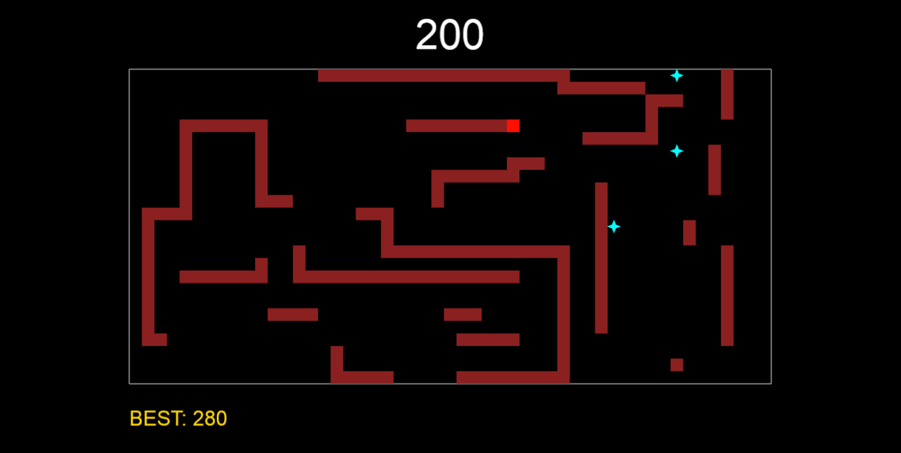

1. Hello World!

Hi, my name is Jussi and I am a Finnish programmer who graduated in the spring of 2022 with a master's degree in computer science from the University of Jyväskylä. I’m specialized in game development and have been using the Unity game engine since 2016. I also have some experience with other game engines like Unreal and Godot. In addition to games, I also like to develop/design all kinds of applications and tools.
Feel free to contact me: jussi.parviainen.dev@gmail.com
Ismene is a platform game that was developed during a game project course held in 2019.
You can download Ismene from here.
The projects presented in the video are the result of a game development challenge course held in 2019, in which two weeks of time were given to complete each prototype. The first challenge was to develop a game that is played using a single button (Orbiter). The theme of the second challenge was to make an educational game about bees, wasps, etc... (Games about bees). The subject of the third game was VR (Golf With Guns). Unfortunately, I don't personally own VR hardware, so the video about Golf With Guns game is recorded with first person shooter controls.
Dream Beats is my second platform game that was developed during a game project course held in 2020.
Wanna try the game? Click here to download for Windows.
I attended a game technology course in 2021, which dealt weekly with various topics related to game development such as game engines, mobile development, html5 as a game platform (Glitchy Snake), artificial intelligence, procedural generation, VR/AR, testing and shaders. The game shown in the video is an experimental hybrid VR/AR Android game that uses the device's gyroscope for aiming.
Below you can see some pictures of other projects done during the course:




Block Builder 3D is a tool whose idea is to make 3D modeling easy and straightforward. I developed the program in 2021 as part of a special assignment course that enabled the design and development of a freely chosen project.
Uber Terrain is a small project I did in 2021 for the course about creative application of basic computer graphics. It utilizes procedural terrain generation that is discussed in my master’s thesis.
My master's thesis published in 2021 research Marching Cubes and Naive Surface Nets algorithms that use volumetric data to construct 3D-models. The algorithms were implemented as part of a Unity project and the video gives a small glimpse of what you can do with them.